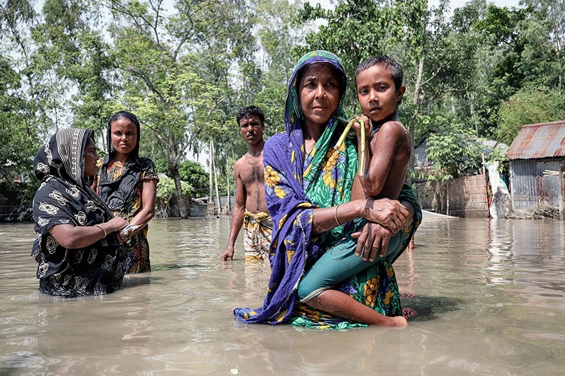
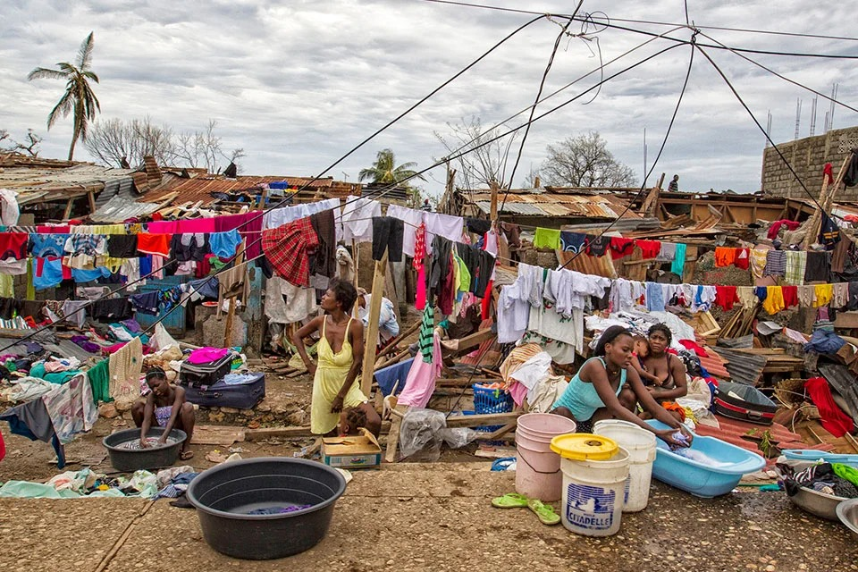

India ranks 7th in the Global Climate Risk Index (2021).
Women in rural India form 75% of the agricultural workforce but own only 13.9% of farmland.
Climate change deepens gender inequality, impacting women due to limited access to resources, economic opportunities, and decision-making.
Global Relevance: India’s climate vulnerability, combined with large population dependence on agriculture, makes gender and climate challenges globally critical.
Problem Statement
Agricultural Vulnerability: Women make up 48% of the agricultural labor force but face unequal access to land, credit, and technology.
Resource Scarcity: Climate change worsens water scarcity; rural women walk up to 6 km daily to fetch water, reducing time for education and economic activities.
Displacement and Disaster Impact: In 2020, 13.6 million people in India were displaced by climate disasters, with women more vulnerable to livelihood loss, gender-based violence, and health issues.
Why It Matters: Climate change hinders women’s empowerment, worsens gender inequality, and slows India’s socio-economic development.
Case Description
Climate Events in India:
Floods: States like Assam, Bihar, and Uttar Pradesh face annual floods. In 2021, Assam floods displaced 5 million people.
Droughts: Maharashtra and Rajasthan experienced severe droughts affecting 1.6 million women farmers in Maharashtra (2018-2019).
Cyclones: Coastal areas in Odisha and West Bengal are hit by cyclones. Cyclone Fani (2019) displaced 1.2 million people, disproportionately affecting women.
Key Players:
Women Farmers: Contribute over 60% of the rural workforce but own only 13.9% of the land.
Local Governments and NGOs: SEWA and other organizations help women with climate adaptation skills.
Government: The National Action Plan on Climate Change (NAPCC) addresses gender issues but lacks implementation.
Actions Taken:
Government Initiatives: The National Adaptation Fund for Climate Change supports resilience projects, but only 10-12% have gender-specific interventions.
Local Adaptation Programs: NGOs work on water conservation, clean energy access, and climate-resilient agriculture for women in rural areas.


Analysis
Structural Gender Inequality in India:
Patriarchal Norms: Women bear the brunt of increased workloads during climate-induced resource scarcity due to traditional gender roles.
Limited Land Ownership: Women’s land ownership is low at 13.9%, reducing access to credit, subsidies, and decision-making.
Low Access to Financial Resources: Women’s limited access to formal financial services hinders their ability to adopt climate adaptation strategies.
Vulnerability Theory:
Economic Vulnerability: Women’s dependence on climate-sensitive sectors increases their poverty risk during climate disasters.
Health and Safety Vulnerabilities: Displacement from floods and cyclones leads to inadequate sanitation and healthcare for women, increasing their risk of infections and health issues.
Time Poverty: Climate change-induced resource scarcity increases women’s daily workload, limiting their time for education or economic activities.
Intersectionality:
Caste and Gender: Dalit and Adivasi women face compounded challenges due to both caste and gender discrimination.
Gender and Displacement: Women face additional risks of sexual violence and limited access to essential services during displacement.
Climate Justice: Women, especially from marginalized communities, are disproportionately affected by climate change while contributing less to carbon emissions.
Inadequate Representation in Decision-Making: Women are largely excluded from climate policy and decision-making processes at various levels.
Solutions/Lessons Learned
Economic Empowerment:
Ensure women’s land ownership to improve resilience and encourage investment in climate-resilient practices.
Expand women’s access to financial services, credit, and insurance programs.
Gender-Inclusive Disaster Preparedness:
Implement women-led disaster planning and response programs.
Prioritize women’s needs for sanitation and healthcare in disaster relief centers.
Sustainable Livelihoods and Resource Management:
Provide training in water management and climate-resilient agriculture.
Increase access to clean energy solutions to reduce reliance on firewood.
Policy and Implementation Improvements:
Enforce gender-sensitive policies in climate action plans, with adequate budget allocations for women-focused initiatives.
Conclusion
Climate change exacerbates gender inequality in rural and marginalized communities in India.
Empowering women through land rights, financial access, disaster preparedness, and sustainable livelihoods can improve resilience.
Gender-responsive policies and inclusive adaptation strategies are crucial to addressing the impact of climate change and closing gender inequality gaps.